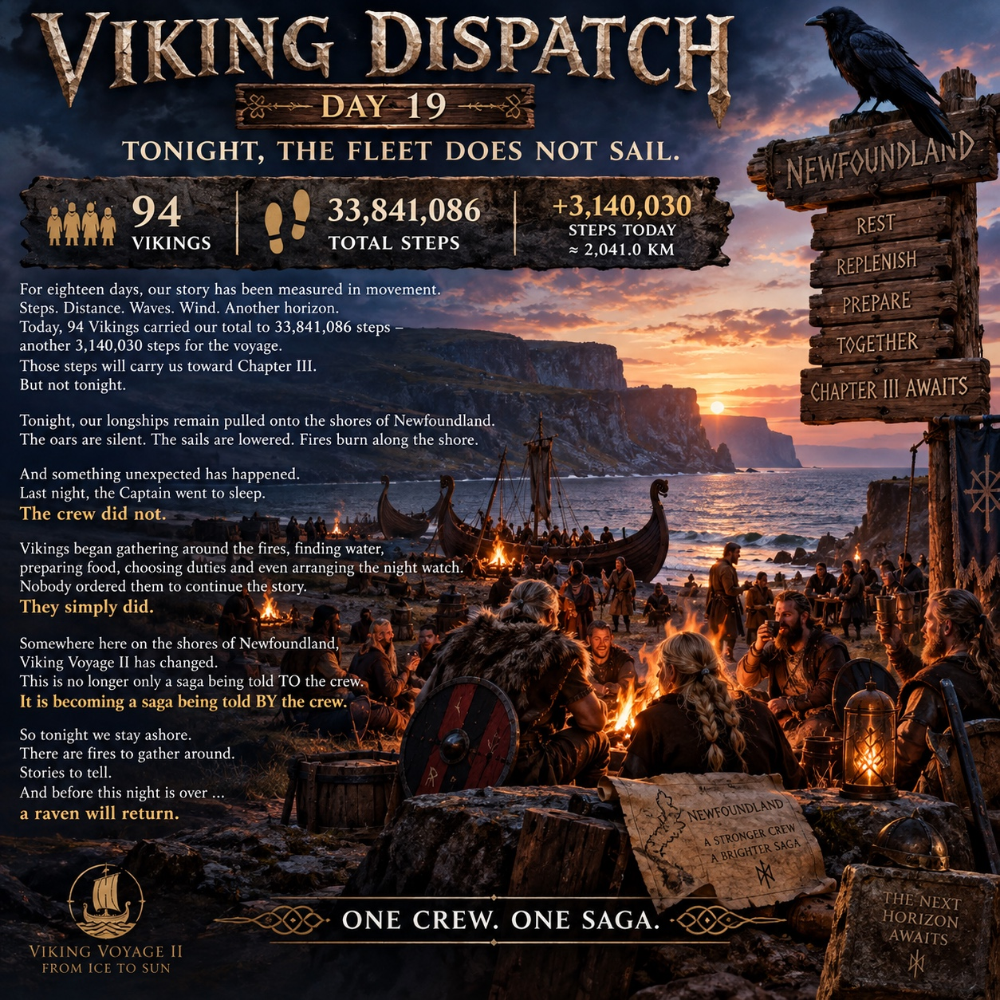

DAY 19
The fleet remained ashore on Newfoundland. Chapter II was complete, while Day 19 progress was banked toward Chapter III.

TONIGHT, THE FLEET DOES NOT SAIL.
For eighteen days, our story had been measured in movement. Steps. Distance. Waves. Wind. Another horizon.
Today, 94 Vikings carried our total to 33,841,086 steps — another 3,140,030 steps, approximately 2,041.0 km, for the voyage.
Those steps would carry us toward Chapter III. But not tonight.
Our longships remained pulled onto the shores of Newfoundland. The oars were silent. The sails were lowered. Fires burned along the shore.
The Captain went to sleep. The crew did not. Vikings gathered around the fires, found water, prepared food, chose duties and arranged the night watch. Nobody ordered them to continue the story. They simply did.
OUR SAGA IS THE CREW'S SAGA.
— Captain Hákon